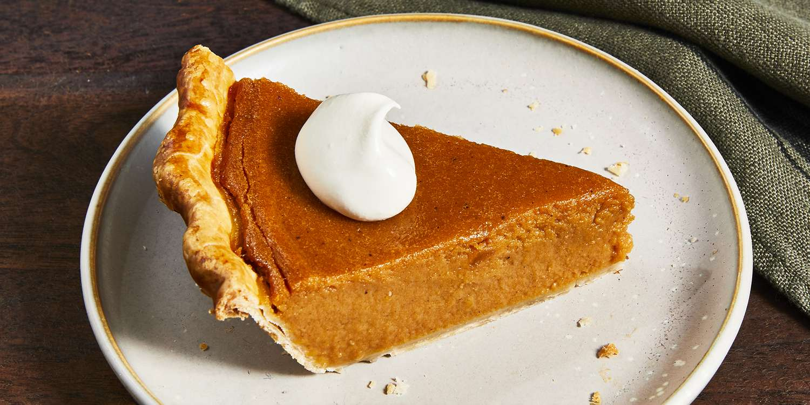

Sweet Potato Pie Recipe
Description
A tasty yet simple sweet potato pie that will make you wish you made more of it.
Ingredients:
- Sweet potato
- Butter
- Sugar
- Milk
- Eggs
- Cinnamon
- Nutmeg
- Vanilla
- Unbaked Pie Crust
Steps:
- Boil and drain the sweet potatoes, then peel off the skins.
- Use a hand mixer or blender to combine the sweet potato flesh with the other ingredients.
- Bake the mixture in the unbaked pie crust and bake until a knife or toothpick comes out clean.